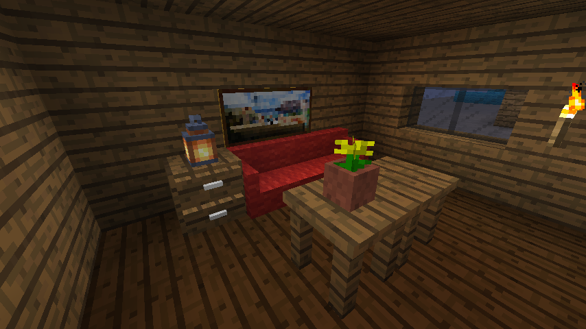

ModFest 1.14 Entries

Adorn
by Juuz
A decorative mod that adds different types of decoration blocks, including tables, chairs, sofas, kitchen counters, drawers, chimneys and shelves.
 View source on GitHub
View source on GitHub